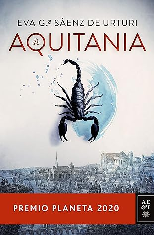

Aquitania
Reseña por Jorge I. Zuluaga

Ver reseña en GoodReads (necesita cuenta)
No recuerdo ya quién me recomendó esta novela o si la conseguí después de leer el "Asesinato de Sócrates" de Marcos Chicot. No es que las dos novelas tengan alguna relación temática o que Eva y Marcos se relacionen de alguna manera, la conexión entre ellas es el Premio Planeta del que la novela de Chicot fue finalista en 2016 y que Aquitania ganó en 2020. Ahora entiendo bien porque ganó el premio. ¡Muy merecido en realidad!
Como habrán leído en la descripción, "Aquitania" narra una parte de la larga vida de Eleanor de Poitiers, Duquesa de Aquitania, Reina consorte de Francia y de Inglaterra, también conocida por haber sido la madre de Ricardo Corazón de León, uno de los reyes cruzados más conocidos de la edad media (aunque este aspecto de su vida no son narrados en esta obra). La novela se desarrolla entre los años que van desde su pre adolescencia (ca. 1135) hasta poco antes de la anulación de su matrimonio con Luis VII de Francia (ca. 1148). Durante aquellos años Eleonor perdió a su padre, se convirtió en Duquesa de Aquitania, se casó con un Capeto (Luy), la familia enemiga de los aquitanos que ostento la corona del reino de los Francos hasta el sigo XVIII, se convirtió en la reina consorte de dicho reino, participó de una cruzada y tuvo dos hijas con el rey monje. Este es el relato (entre ficticio y real) de algunos de los acontecimientos que marcaron la vida de Eleonor durante esos años y otros que ocurrieron un poco antes.
El estilo narrativo es original y muy entretenido. La historia es contada en primer persona desde la perspectiva de algunos de sus protagonistas, Lia, Rai, Luy, el niño, para usar los nombres familiares de Eleonor de Aquitania, Raymond de Poitiers y... el niño - lo dejaremos así para no arruinar la historia.
Impresionante la habilidad de Eva García, su autora, para convertir una parte de la vida de Eleanor (o Leonor) en una verdadera madeja de intrigas, asesinatos, venenos, conspiraciones palaciegas, asedios fallidos, etc. Por momentos me sentí leyendo una verdadera novela policíaca que se desarrollaba en la baja edad media.
El desenlace de la novela es apasionante. Vale la pena esperar hasta los últimos capítulos para que se desenrede la madeja y todo caiga en su lugar. La autora logra alargar de forma muy ingeniosa la solución a algunos de los misterios centrales para mantener a quién lee la novela atrapado hasta el final.
Los personajes están muy bien desarrollados. Son humanos complejos que por momentos admiras y quieres, para unos capítulos más tarde empezar a dudar de tus sentimientos previos hacia ellos y empezar en parte a odiarlos.
El romance no falta en la novela y es tratado con profundidad y sin trivialidades por la autora. En pocas palabras, las relaciones descritas en Aquitania entre algunos de sus personajes son bonitas y conmovedoras.
Hasta los agradecimientos son conmovedores.
Eva García lo deja a uno con ganas de leer el resto de su obra y las novelas por venir.